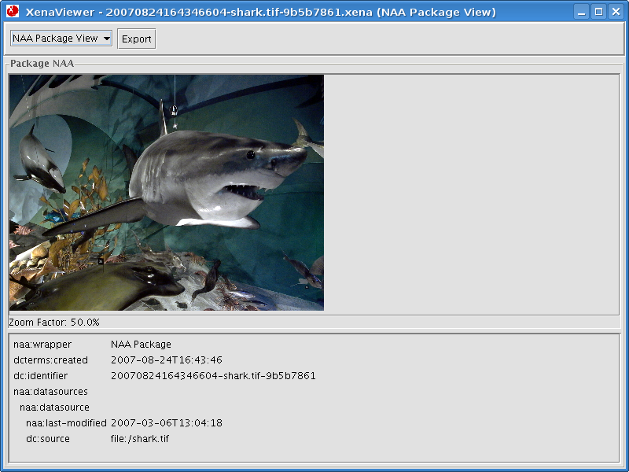
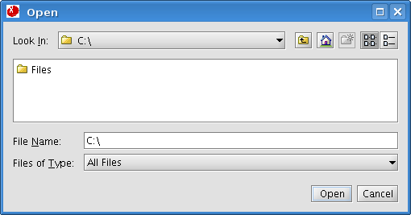
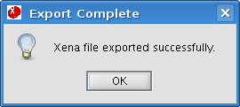
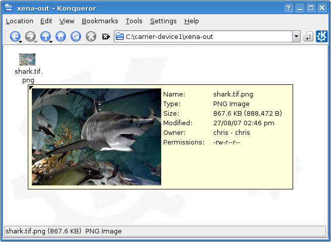

Once files have been normalised, they can be exported in their new open format. This option is available from within the Xena viewer.
Within the Xena viewer, hit the Export button which is available in any of the available views.

This will prompt where to save the file.
Simply browse to the location where you wish to save the file to and click Open.

Xena should present a screen informing you that the export was successful.
Click OK to close the export screen and return to the Xena viewer.

Browsing to the location of the exported file in your system's file manager should show the file in its new open format.
Here we have the TIFF image shark.tif which has been successfully normalised to the PNG format and exported to disk as shark.tif.png.
